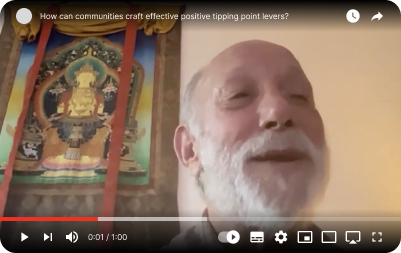
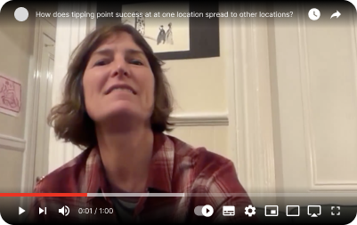
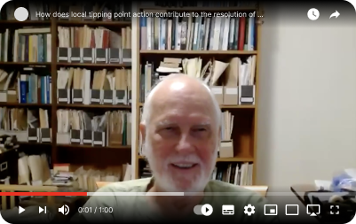

Successful communities have shown the way! Across the globe and in response to many kinds of environmental challenges, innovative communities have proven it's possible to restore both ecosystems and social well-being—even under the toughest conditions. By tackling root causes and leveraging small but powerful changes, they've unlocked lasting progress and inspired others to take action.
Tipping points are about small changes making a big difference.
A positive tipping point lever sets restoration in motion.
Feedback loops that amplify change are also the drivers of change.

Community members develop a shared understanding of the problem, then brainstorm targeted, high-impact actions capable of reversing those cycles.

Success spreads to other locations when people elsewhere learn about the success and decide to try it for themselves.

The success of tipping point levers at a local level show that it's not necessary to wait for action from national governments or international accords to solve global problems.